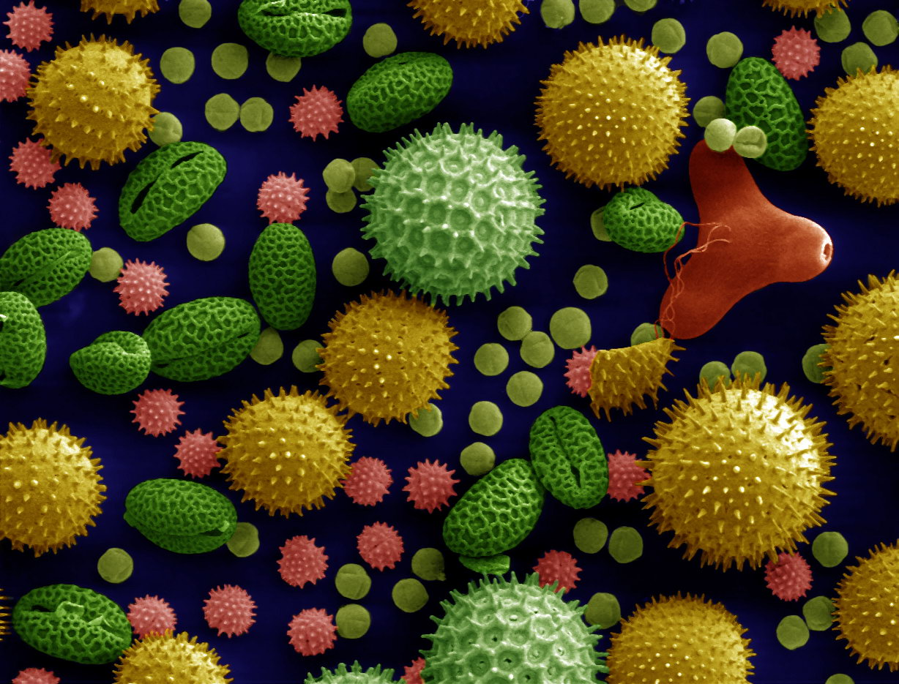

Have you ever stumbled upon self-help advice tiktoks while casually scrolling through numerous social media posts? Have you considered if the person giving advice is a certified psychologist? Recently, there has been a surge of people giving mental health advice without any proper education in psychology, which is consequently based on subjective experiences rather than scientifically based evidence. This problem has created empty space on social media which should be filled with content created by certified, professional psychologists. It is worth noting the importance of checking the reliability of our sources and to emphasize seeking professional help.
In this project we will scratch the surface of clinical psychology. We will start by covering the basics of neuroscience and mental health disorders because they are often found closely related to each other. Furthermore, we will learn about different clinical psychological tests used for diagnosing different disorders because they are our primary instrument in the working field. Then we will practice conducting the initial interview of psychotherapy which will prepare us for talking to a “patient” to assess their problems and try to establish a working diagnosis. Finally, we will write a clinical note detailing all the information we gathered about the patient.
Ena Zelić
Faculty of Humanities and Social Sciences in Rijeka, department of Psychology
Ena is currently finishing her master’s degree in psychology. She has been a participant in the Summer School of Science in 2016 and 2017. Last year she volunteered for EFPSA and held workshops for high school students as a part of Mind the Mind – Combat the stigma of mental disorders Campaign as she firmly believes in that cause. In her free time, she watches football matches, travels all over Europe, and drinks coffee with friends. She is yet to remain consistent with running.
What if you could create an object by assembling it atom by atom? In principle, you would be free to engineer almost any structure you want, setting aside subtleties of chemistry and thermodynamics. Although this is possible, it is a tedious task to construct anything bottom up like in IBM's "Boy and the atom" movie (see YouTube). Instead, one could perhaps start with a bigger building block - let's say, sheets of material - and stack them on top of each other like a sandwich. Such structures may be few- or even one atom thin; so thin, that they are, in a very real, quantum-mechanical sense, two dimensional, which makes them quantitatively very different from three-dimensional, ordinary materials we know and love.
This brings us to graphene, the poster child for two dimensional electronics. In the thirteen years since Novoselov and Geim's 2010 Nobel Prize, graphene has been christened "wonder material" and has been found to be able to do "just about anything" imaginable, except leave the lab and find a real use. One of those great yet unfulfilled prospects is integration of graphene and other 2D materials into processors and integrated circuits. This could address the failure of famous Moore's law, saying that chip transistor density doubles roughly every two years. The law is due to die in the 2020s as semiconductor technology enters field-effect transistor (FET) channel length and oxide thickness scales at which quantum effects and details of nanofabrication play a major role.
In this project you will model, assemble and characterise a graphene field effect transistor. In the process, you will learn theoretical basis of quantum mechanics and solid state physics, two-dimensional materials, and how to perform basic electronic measurements. In addition, we will touch upon the technological, political, social and environmental issues troubling semiconductor industry, whose importance to the world economy grows by the day.
Mikołaj Metelski
Walter Schottky Institute, Technical University of Munich
Nick Metelski originally comes from Wrocław, Poland. After completing bachelor studies in physics at Imperial College London, he currently studies towards a Master's degree in Quantum Science and Technology in Munich, assisting in building a quantum simulator in two dimensional materials.
Nick attended S3 in 2014, which had a great impact on his choice of physics as a study subject. Besides physics, he is a connoisseur of artisan tea, classical music and memes.
Have you ever wondered how you would fare if you were teleported to a time before the discovery of bacteria? With just the vague knowledge of the existence of these too-tiny-to-see organisms, you probably couldn't convince a single surrounding peasant of their presence all around us. Nor could you find any suitable way to deal with them, without having some practical knowledge of antibiotics and where they come from.
In this project, we’ll be covering the basics – how to grow bacteria, how to see them and how to deal with them. We’ll be growing our own colonies, covering the necessary techniques to prepare our cultures and then preparing our very own slides to view under a microscope. We will be learning about some of the most common bacteria around us – how they function but also the mechanisms with which they attack us and cause diseases. But you’ll also be able to learn how humanity has been fighting this threat, covering the antibiotics in use today. We’ll learn how they function, and we’ll see them in action by preforming antibiotic sensitivity testing on our very own colonies. We will also try to recreate the discovery of the first true antibiotic – penicillin and testing how it fares against our modern and probably resistant colonies. This project will provide an overview of the most important facts of our fight against harmful bacteria and will hopefully give you a newfound perspective of the joys of living in a post-Fleming world.
Antonia Bukovac
School of Medicine, University of Zagreb, Croatia
Antonia is currently in her last year of medical school after being inspired by her very first project in the Summer School of Science in 2014. She also participated in 2015 and 2016 and wants to return, hopefully carrying down that inspiration to someone else. She really loves at looking bacteria and can show you her vast collection of photographs taken during microbiology classes which she is quite proud of.
In her free time, she likes to imagine how she would fare in a primitive society and if her medical skills would be of any use. She also likes to read, mostly literature of questionable quality.
 Plants live all around us, but they often go unnoticed, seen more as a background to nature than a part of it. Also, they are often considered a bit boring, since they just photosynthesize in silence, right? Actually, wrong! Plants can’t move (at least not in the same way as animals do), so they have incredible adaptations which allow them to conquer habitats all over the world, including hot, dry deserts and freezing mountain heights. Some of these adaptations are morphological, visible at first look, and some are physiological, hidden deep inside plant cells, circling through their organisms in form of plant hormones and a variety of other plant-made chemicals. And those chemical compounds aren’t useful only to the plant! To this day, more than half of modern medicines are based on (or inspired by) chemicals found in plants!
In this project, we’ll try to get to know plants a bit better and prove they are more than goat food. We will work in the field to collect some samples of local flora. We will use dichotomy keys and literature to determine which species we have collected. We will be collecting pollen samples and analysing the distribution of pollen compared to the distribution of different plant species. We will study plant physiology by exposing plants to different environmental conditions (light, water, temperature) and observing their reactions and adaptations. Finally, we will be using paper chromatography and a few other tests to find out which chemical compounds are hiding inside leaves, flowers and roots of different species of plants.
Helena Valentinčić
Faculty of Science and Faculty of Humanities and Social Sciences, University of Zagreb
Helena is a parallel master student, studying Experimental biology at Faculty of Science and Pedagogy and Museology at Faculty of Humanities and Social Sciences. She is currently working on her two master thesis, one on invasive horticultural plant species, and one on different approaches to learning in schools and museums. Her biggest recent accomplishment is learning how to cook without starting fires in the kitchen.